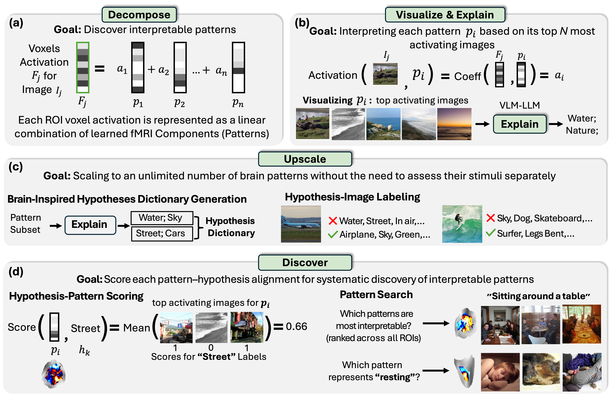

BrainExplore
Large-Scale Discovery of Interpretable Visual Representations in the Human Brain
1Weizmann Institute of Science 2 Massachusetts Institute of Technology
*Denotes Equal Contribution


BrainExplore: Discovering Interpretable Visual Representations in the Human Brain
Abstract
Understanding how the human brain represents visual concepts, and in which brain regions these representations are encoded, remains a long-standing challenge. Decades of work have advanced our understanding of visual representations, yet brain signals remain large and complex, and the space of possible visual concepts is vast. As a result, most studies remain small-scale, rely on manual inspection, focus on specific regions and properties, and rarely include systematic validation. We present a large-scale, automated framework for discovering and explaining visual representations across the human cortex. Our method comprises two main stages. First, we discover candidate interpretable patterns in fMRI activity through unsupervised, data-driven decomposition methods. Next, we explain each pattern by identifying the set of natural images that most strongly elicit it and generating a natural-language description of their shared visual meaning. To scale this process, we introduce an automated pipeline that tests multiple candidate explanations, assigns quantitative reliability scores, and selects the most consistent description for each voxel pattern. Our framework reveals thousands of interpretable patterns spanning many distinct visual concepts, including fine-grained representations previously unreported.
BrainExplore Framework
The framework consists of four stages: (a) Decompose: Per-region fMRI decomposition to discover interpretable patterns; (b) Visualize & Explain: Retrieve the top-activating images for each pattern and interpret its semantics; (c) Upscale: Scale to an unlimited number of patterns by constructing a brain-inspired dictionary and labeling each image with respect to each hypothesis; (d) Discover: Score pattern–hypothesis alignment, enabling systematic discovery of interpretable patterns and identification of the pattern that best explains a given hypothesis.
BibTeX